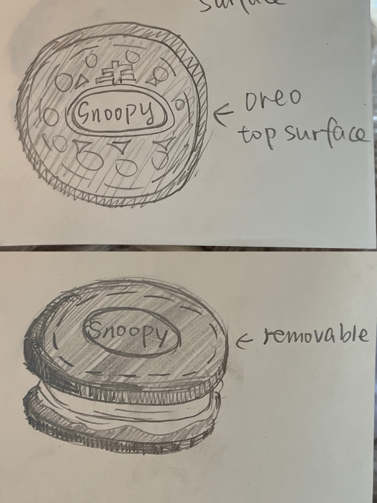
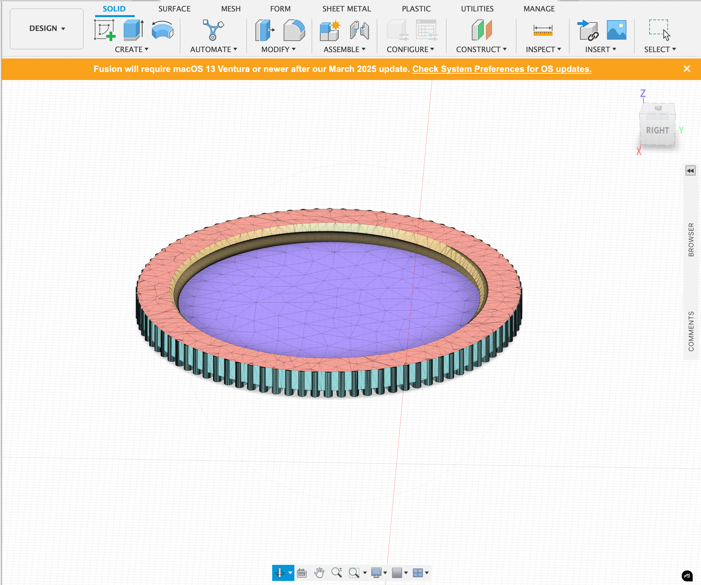
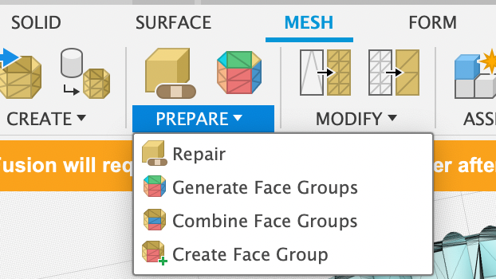
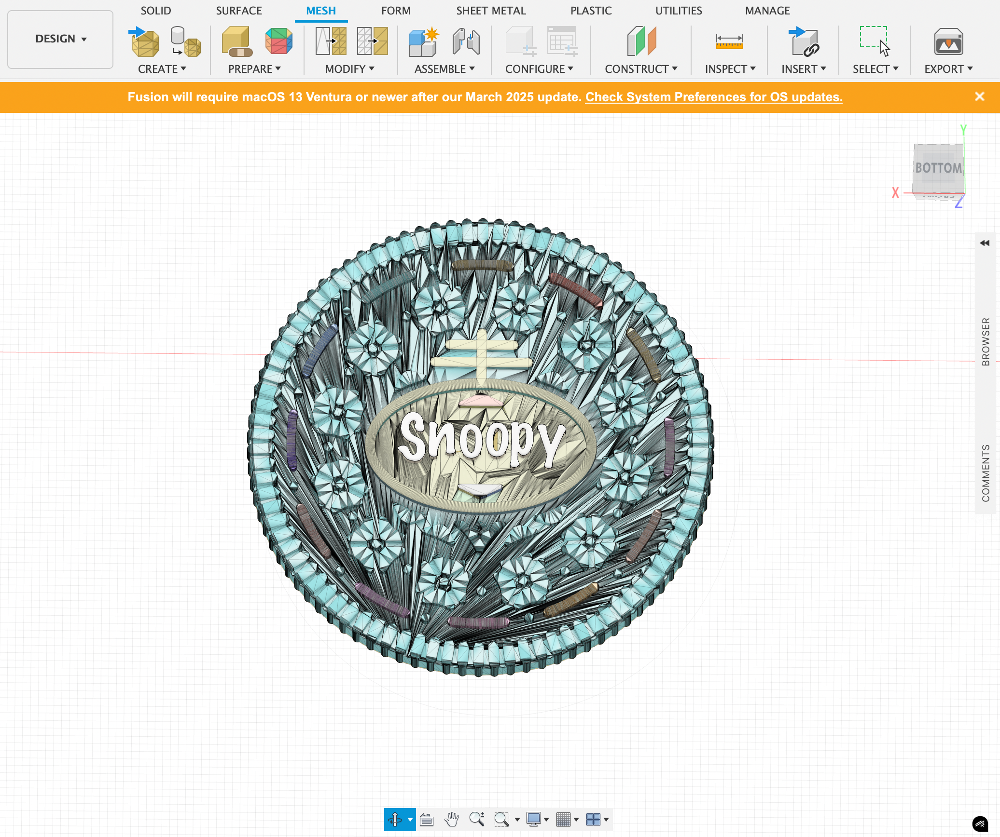
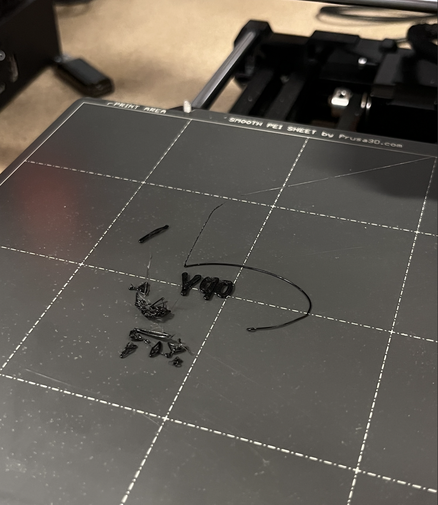
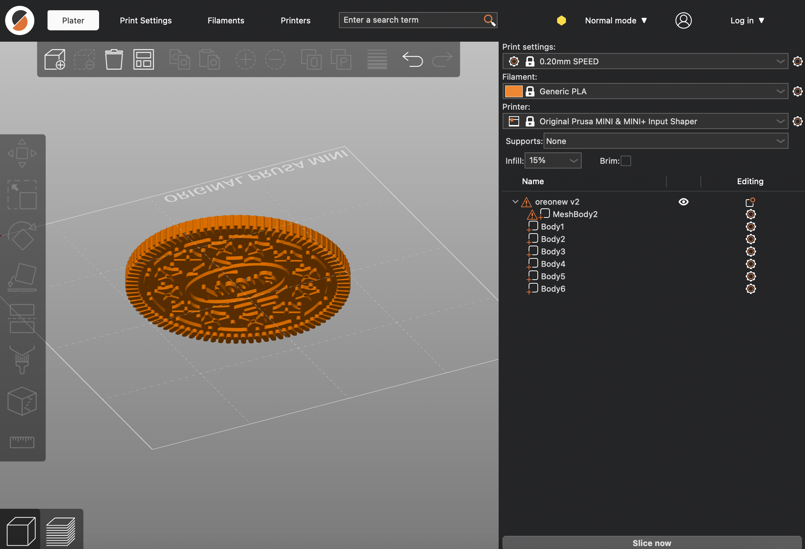
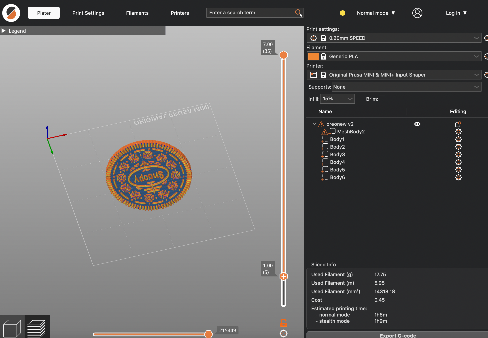

Process:
1. Downloaded the top surface of Oreo model.
2. Sketched out my idea on paper.
3. Imported the 3mf file into Fusion.
4. Used the prepare function to turn the solid model into mesh.
5. Deleted the text part("Oreo") on the Oreo's surface.
6. Repaired the Oreo's surface.

7. Created a sketch with text "Snoopy".
8. Extruded the text to create a 3-D text. Moved it to the Oreo's surface. Combine.
9. Adjust the size to be fit with the botton part of Oreo.
10. Exported the 3mf file. Imported it into Prusaslicer.
11. Sliced and printed.
The first print failed:
11.Figured out the reason. Might because the "Snoopy" part is a bit higher than the rest of Oreo's surface.
12. Solution: Moved the whole Oreo to sink slightly into the printer bed, in order to create a flat surface as the first layer of printing.
13. Printed again.

Reflection:
Overall, the remix was successful. However, it did not achieve my goal of screwing the top surface part and button part of oreo together.
This was beacause the size of the top surface is not fit with the size of the button part. And it was caused by the missing documention to the first scaling of the button part. I had to measure the diameter of the scaled botton part. However, the measurement was not precise enough. I had to select the measuring points by myself, which means the line between two selected points may not exactly be the diameter.
To enhance my printing process, I will document more details during future remixing efforts. Additionally, if time permits, I may rescale and reprint the top surface for better results.
Also, through my observation, the surface of my print is not as smooth as the bottom part of the Oreo. I suspect this is due to the slicing step in my process(step12). At the moment, I do not have a solution for this rough texture, but I will explore potential approaches in Fusion later.
As for the software, the Fusion is a useful CAD tool which has lots of functions. I believe I will spend more time on it to learn more CAD skills.